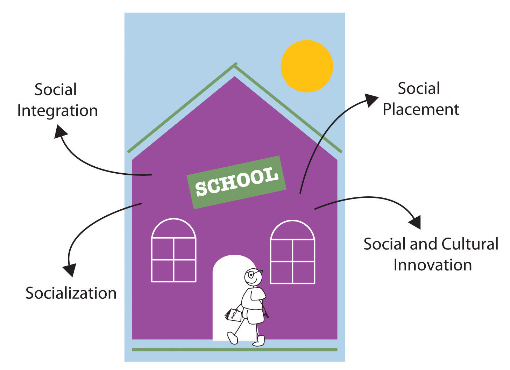
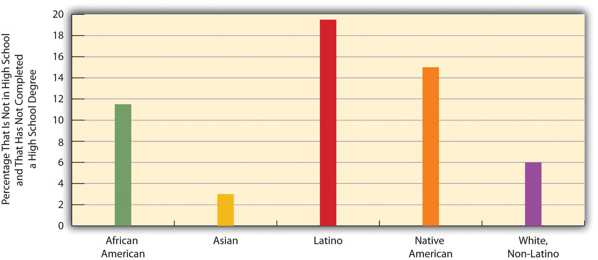
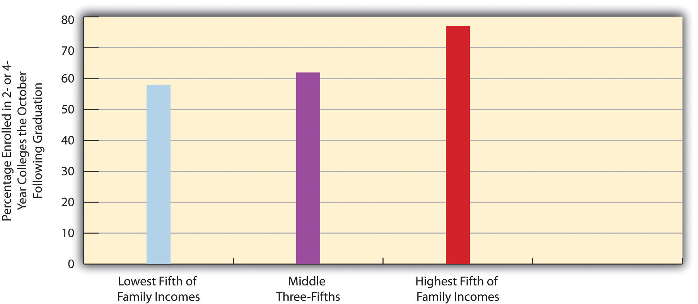
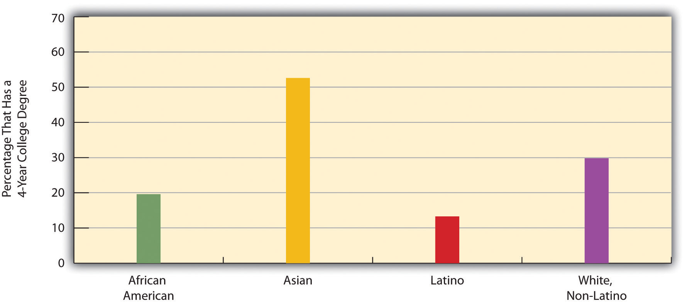
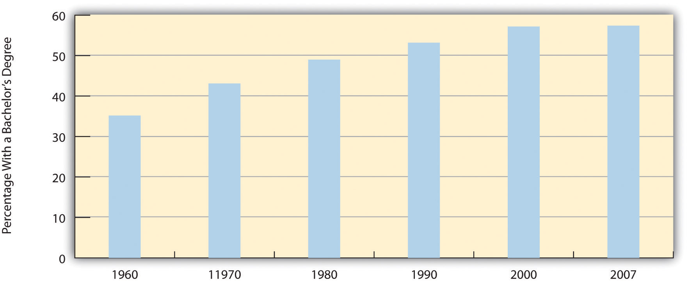
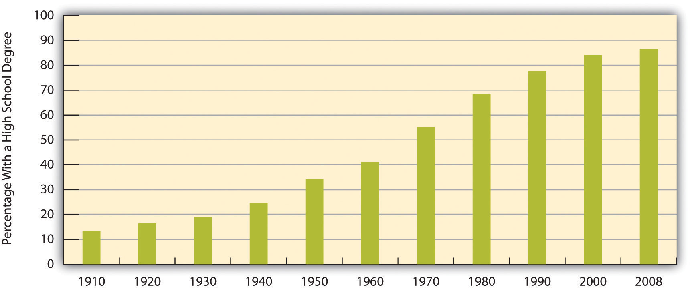
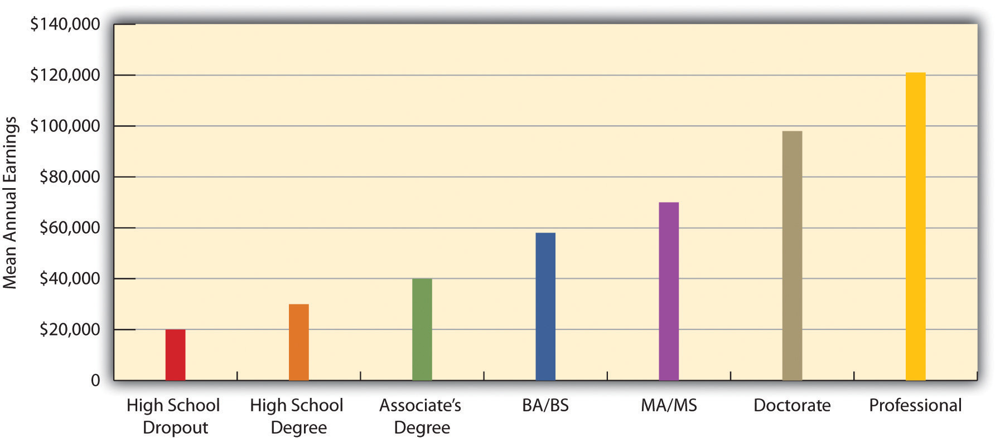
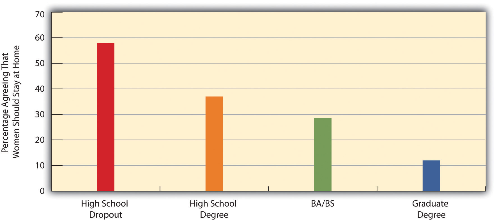

“Lewistown Voters Say No to Bond for School,” the headline said. We usually associate crowded, decaying schools with urban areas, but they are also found in rural areas. In September 2010, voters in Lewistown, a small town in central Montana surrounded by prairies and mountains, defeated a bond issue for the construction of a new middle school. The new school would have replaced the town’s only junior high school. Built in 1921, the school had a host of problems, according to the news article: it did not meet accessibility standards for people with physical disabilities; plaster was routinely falling off walls and ceilings, requiring six classrooms to add suspended ceilings to prevent injuries from falling plaster; and the school was so crowded that some classes met in the gym or hallways and some students had to take tests in closets. (Hall, 2010)Hall, R. (2010, September 22). Lewistown voters say no to bond for school. Great Falls [MT] Tribune. Retrieved from http://www.greatfallstribune.com/article/20100922/NEWS20100901/29220302/Lewistown+voters+say+no+to+bond+for+school
Education is one of our most important social institutions. Youngsters and adolescents spend most of their weekday waking hours in school, doing homework, or participating in extracurricular activities, and many then go on to college. People everywhere care deeply about what happens in our nation’s schools, and issues about the schools ignite passions across the political spectrum. Yet, as this story about a very old school in Montana illustrates, many schools are ill equipped to prepare their students for the complex needs of today’s world.
This chapter’s discussion of education begins with the development of schooling in the United States and then turns to sociological perspectives on education. The remainder of the chapter discusses education in today’s society. This discussion highlights education as a source and consequence of various social inequalities and examines several key issues affecting the nation’s schools and the schooling of its children.
EducationThe social institution through which a society teaches its members the skills, knowledge, norms, and values they need to learn to become good, productive members of their society. is the social institution through which a society teaches its members the skills, knowledge, norms, and values they need to learn to become good, productive members of their society. As this definition makes clear, education is an important part of socialization. Education is both formal and informal. Formal educationLearning that occurs in schools under teachers, principals, and other specially trained professionals. is often referred to as schooling, and as this term implies, it occurs in schools under teachers, principals, and other specially trained professionals. Informal educationLearning that occurs outside the schools, traditionally in the home. may occur almost anywhere, but for young children it has traditionally occurred primarily in the home, with their parents as their instructors. Day care has become an increasingly popular venue in industrial societies for young children’s instruction, and education from the early years of life is thus more formal than it used to be.
Education in early America was hardly formal. During the colonial period, the Puritans in what is now Massachusetts required parents to teach their children to read and also required larger towns to have an elementary school, where children learned reading, writing, and religion. In general, though, schooling was not required in the colonies, and only about 10% of colonial children, usually just the wealthiest, went to school, although others became apprentices (Urban, Jennings, & Wagoner, 2008).Urban, W. J., Jennings L., & Wagoner, J. (2008). American education: A history (4th ed.). New York, NY: Routledge.
To help unify the nation after the Revolutionary War, textbooks were written to standardize spelling and pronunciation and to instill patriotism and religious beliefs in students. At the same time, these textbooks included negative stereotypes of Native Americans and certain immigrant groups. The children going to school continued primarily to be those from wealthy families. By the mid-1800s, a call for free, compulsory education had begun, and compulsory education became widespread by the end of the century. This was an important development, as children from all social classes could now receive a free, formal education. Compulsory education was intended to further national unity and to teach immigrants “American” values. It also arose because of industrialization, as an industrial economy demanded reading, writing, and math skills much more than an agricultural economy had.
In colonial America, only about 10% of children went to school, and these children tended to come from wealthy families. After the Revolutionary War, new textbooks helped standardize spelling and pronunciation and promote patriotism and religious beliefs, but these textbooks also included negative stereotypes of Native Americans.
Source: Photo courtesy of Joel Dorman Steele and Esther Baker Steele, http://commons.wikimedia.org/wiki/File:Spinninginthecolonialkitchen.jpg.
Free, compulsory education, of course, applied only to primary and secondary schools. Until the mid-1900s, very few people went to college, and those who did typically came from the fairly wealthy families. After World War II, however, college enrollments soared, and today more people are attending college than ever before, even though college attendance is still related to social class, as we shall discuss shortly.
At least two themes emerge from this brief history. One is that until very recently in the record of history, formal schooling was restricted to wealthy males. This means that boys who were not white and rich were excluded from formal schooling, as were virtually all girls, whose education was supposed to take place informally at home. Today, as we will see, race, ethnicity, social class, and, to some extent, gender continue to affect both educational achievement and the amount of learning occurring in schools.
Second, although the rise of free, compulsory education was an important development, the reasons for this development trouble some critics (Bowles & Gintis, 1976; Cole, 2008).Bowles, S., & Gintis, H. (1976). Schooling in capitalist America: Educational reforms and the contradictions of economic life. New York, NY: Basic Books; Cole, M. (2008). Marxism and educational theory: Origins and issues. New York, NY: Routledge. Because compulsory schooling began in part to prevent immigrants’ values from corrupting “American” values, they see its origins as smacking of ethnocentrism. They also criticize its intention to teach workers the skills they needed for the new industrial economy. Because most workers were very poor in this economy, these critics say, compulsory education served the interests of the upper/capitalist class much more than it served the interests of workers. It was good that workers became educated, say the critics, but in the long run their education helped the owners of capital much more than it helped the workers themselves. Whose interests are served by education remains an important question addressed by sociological perspectives on education, to which we now turn.
The major sociological perspectives on education fall nicely into the functional, conflict, and symbolic interactionist approaches (Ballantine & Hammack, 2009).Ballantine, J. H., & Hammack, F. M. (2009). The sociology of education: A systematic analysis (6th ed.). Upper Saddle River, NJ: Prentice Hall. Table 16.1 "Theory Snapshot" summarizes what these approaches say.
Table 16.1 Theory Snapshot
| Theoretical perspective | Major assumptions |
|---|---|
| Functionalism | Education serves several functions for society. These include (a) socialization, (b) social integration, (c) social placement, and (d) social and cultural innovation. Latent functions include child care, the establishment of peer relationships, and lowering unemployment by keeping high school students out of the full-time labor force. |
| Conflict theory | Education promotes social inequality through the use of tracking and standardized testing and the impact of its “hidden curriculum.” Schools differ widely in their funding and learning conditions, and this type of inequality leads to learning disparities that reinforce social inequality. |
| Symbolic interactionism | This perspective focuses on social interaction in the classroom, on the playground, and in other school venues. Specific research finds that social interaction in schools affects the development of gender roles and that teachers’ expectations of pupils’ intellectual abilities affect how much pupils learn. |
Functional theory stresses the functions that education serves in fulfilling a society’s various needs. Perhaps the most important function of education is socialization. If children need to learn the norms, values, and skills they need to function in society, then education is a primary vehicle for such learning. Schools teach the three Rs, as we all know, but they also teach many of the society’s norms and values. In the United States, these norms and values include respect for authority, patriotism (remember the Pledge of Allegiance?), punctuality, individualism, and competition. Regarding these last two values, American students from an early age compete as individuals over grades and other rewards. The situation is quite the opposite in Japan, where, as we saw in Chapter 4 "Socialization", children learn the traditional Japanese values of harmony and group belonging from their schooling (Schneider & Silverman, 2010).Schneider, L., & Silverman, A. (2010). Global sociology: Introducing five contemporary societies (5th ed.). New York, NY: McGraw-Hill. They learn to value their membership in their homeroom, or kumi, and are evaluated more on their kumi’s performance than on their own individual performance. How well a Japanese child’s kumi does is more important than how well the child does as an individual.
A second function of education is social integration. For a society to work, functionalists say, people must subscribe to a common set of beliefs and values. As we saw, the development of such common views was a goal of the system of free, compulsory education that developed in the 19th century. Thousands of immigrant children in the United States today are learning English, U.S. history, and other subjects that help prepare them for the workforce and integrate them into American life. Such integration is a major goal of the English-only movement, whose advocates say that only English should be used to teach children whose native tongue is Spanish, Vietnamese, or whatever other language their parents speak at home. Critics of this movement say it slows down these children’s education and weakens their ethnic identity (Schildkraut, 2005).Schildkraut, D. J. (2005). Press “one” for English: Language policy, public opinion, and American identity. Princeton, NJ: Princeton University Press.
A third function of education is social placement. Beginning in grade school, students are identified by teachers and other school officials either as bright and motivated or as less bright and even educationally challenged. Depending on how they are identified, children are taught at the level that is thought to suit them best. In this way they are prepared in the most appropriate way possible for their later station in life. Whether this process works as well as it should is an important issue, and we explore it further when we discuss school tracking shortly.
Social and cultural innovation is a fourth function of education. Our scientists cannot make important scientific discoveries and our artists and thinkers cannot come up with great works of art, poetry, and prose unless they have first been educated in the many subjects they need to know for their chosen path.
Figure 16.1 The Functions of Education
Schools ideally perform many important functions in modern society. These include socialization, social integration, social placement, and social and cultural innovation.
Education also involves several latent functions, functions that are by-products of going to school and receiving an education rather than a direct effect of the education itself. One of these is child care. Once a child starts kindergarten and then first grade, for several hours a day the child is taken care of for free. The establishment of peer relationships is another latent function of schooling. Most of us met many of our friends while we were in school at whatever grade level, and some of those friendships endure the rest of our lives. A final latent function of education is that it keeps millions of high school students out of the full-time labor force. This fact keeps the unemployment rate lower than it would be if they were in the labor force.
Conflict theory does not dispute most of the functions just described. However, it does give some of them a different slant and talks about various ways in which education perpetuates social inequality (Hill, Macrine, & Gabbard, 2010; Liston, 1990).Hill, D., Macrine, S., & Gabbard, D. (Eds.). (2010). Capitalist education: Globalisation and the politics of inequality. New York, NY: Routledge; Liston, D. P. (1990). Capitalist schools: Explanation and ethics in radical studies of schooling. New York, NY: Routledge. One example involves the function of social placement. As most schools track their students starting in grade school, the students thought by their teachers to be bright are placed in the faster tracks (especially in reading and arithmetic), while the slower students are placed in the slower tracks; in high school, three common tracks are the college track, vocational track, and general track.
Such tracking does have its advantages; it helps ensure that bright students learn as much as their abilities allow them, and it helps ensure that slower students are not taught over their heads. But, conflict theorists say, tracking also helps perpetuate social inequality by locking students into faster and lower tracks. Worse yet, several studies show that students’ social class and race and ethnicity affect the track into which they are placed, even though their intellectual abilities and potential should be the only things that matter: white, middle-class students are more likely to be tracked “up,” while poorer students and students of color are more likely to be tracked “down.” Once they are tracked, students learn more if they are tracked up and less if they are tracked down. The latter tend to lose self-esteem and begin to think they have little academic ability and thus do worse in school because they were tracked down. In this way, tracking is thought to be good for those tracked up and bad for those tracked down. Conflict theorists thus say that tracking perpetuates social inequality based on social class and race and ethnicity (Ansalone, 2006; Oakes, 2005).Ansalone, G. (2006). Tracking: A return to Jim Crow. Race, Gender & Class, 13, 1–2; Oakes, J. (2005). Keeping track: How schools structure inequality (2nd ed.). New Haven, CT: Yale University Press.
Social inequality is also perpetuated through the widespread use of standardized tests. Critics say these tests continue to be culturally biased, as they include questions whose answers are most likely to be known by white, middle-class students, whose backgrounds have afforded them various experiences that help them answer the questions. They also say that scores on standardized tests reflect students’ socioeconomic status and experiences in addition to their academic abilities. To the extent this critique is true, standardized tests perpetuate social inequality (Grodsky, Warren, & Felts, 2008).Grodsky, E., Warren, J. R., & Felts, E. (2008). Testing and social stratification in American education. Annual Review of Sociology, 34(1), 385–404.
As we will see, schools in the United States also differ mightily in their resources, learning conditions, and other aspects, all of which affect how much students can learn in them. Simply put, schools are unequal, and their very inequality helps perpetuate inequality in the larger society. Children going to the worst schools in urban areas face many more obstacles to their learning than those going to well-funded schools in suburban areas. Their lack of learning helps ensure they remain trapped in poverty and its related problems.
Conflict theorists also say that schooling teaches a hidden curriculumA set of values and beliefs learned in school that support the status quo, including the existing social hierarchy., by which they mean a set of values and beliefs that support the status quo, including the existing social hierarchy (Booher-Jennings, 2008)Booher-Jennings, J. (2008). Learning to label: Socialisation, gender, and the hidden curriculum of high-stakes testing. British Journal of Sociology of Education, 29, 149–160. (see Chapter 4 "Socialization"). Although no one plots this behind closed doors, our schoolchildren learn patriotic values and respect for authority from the books they read and from various classroom activities.
Symbolic interactionist studies of education examine social interaction in the classroom, on the playground, and in other school venues. These studies help us understand what happens in the schools themselves, but they also help us understand how what occurs in school is relevant for the larger society. Some studies, for example, show how children’s playground activities reinforce gender-role socialization. Girls tend to play more cooperative games, while boys play more competitive sports (Thorne, 1993)Thorne, B. (1993). Gender play: Girls and boys in school. New Brunswick, NJ: Rutgers University Press. (see Chapter 11 "Gender and Gender Inequality").
Another body of research shows that teachers’ views about students can affect how much the students learn. When teachers think students are smart, they tend to spend more time with them, to call on them, and to praise them when they give the right answer. Not surprisingly these students learn more because of their teachers’ behavior. But when teachers think students are less bright, they tend to spend less time with them and act in a way that leads the students to learn less. One of the first studies to find this example of a self-fulfilling prophecy was conducted by Robert Rosenthal and Lenore Jacobson (1968).Rosenthal, R., & Jacobson, L. (1968). Pygmalion in the classroom. New York, NY: Holt. They tested a group of students at the beginning of the school year and told their teachers which students were bright and which were not. They tested the students again at the end of the school year; not surprisingly the bright students had learned more during the year than the less bright ones. But it turned out that the researchers had randomly decided which students would be designated bright and less bright. Because the “bright” students learned more during the school year without actually being brighter at the beginning, their teachers’ behavior must have been the reason. In fact, their teachers did spend more time with them and praised them more often than was true for the “less bright” students. To the extent this type of self-fulfilling prophecy occurs, it helps us understand why tracking is bad for the students tracked down.
Other research focuses on how teachers treat girls and boys. Several studies from the 1970s through the 1990s found that teachers call on boys more often and praise them more often (American Association of University Women Educational Foundation, 1998; Jones & Dindia, 2004).American Association of University Women Educational Foundation. (1998). Gender gaps: Where schools still fail our children. Washington, DC: American Association of University Women Educational Foundation; Jones, S. M., & Dindia, K. (2004). A meta-analystic perspective on sex equity in the classroom. Review of Educational Research, 74, 443–471. Teachers did not do this consciously, but their behavior nonetheless sent an implicit message to girls that math and science are not for girls and that they are not suited to do well in these subjects. This body of research stimulated efforts to educate teachers about the ways in which they may unwittingly send these messages and about strategies they could use to promote greater interest and achievement by girls in math and science (Battey, Kafai, Nixon, & Kao, 2007).Battey, D., Kafai, Y., Nixon, A. S., & Kao, L. L. (2007). Professional development for teachers on gender equity in the sciences: Initiating the conversation. Teachers College Record, 109(1), 221–243.
Education in the United States is a massive social institution involving millions of people and billions of dollars. About 75 million people, almost one-fourth of the U.S. population, attend school at all levels. This number includes 40 million in grades pre-K through 8, 16 million in high school, and 19 million in college (including graduate and professional school). They attend some 132,000 elementary and secondary schools and about 4,200 2-year and 4-year colleges and universities and are taught by about 4.8 million teachers and professors (U.S. Census Bureau, 2010).U.S. Census Bureau. (2010). Statistical abstract of the United States: 2010. Washington, DC: U.S. Government Printing Office. Retrieved from http://www.census.gov/compendia/statab Education is a huge social institution.
About 65% of U.S. high school graduates enroll in college the following fall. This is a very high figure by international standards, as college in many other industrial nations is reserved for the very small percentage of the population who pass rigorous entrance exams. They are the best of the brightest in their nations, whereas higher education in the United States is open to all who graduate high school. Even though that is true, our chances of achieving a college degree are greatly determined at birth, as social class and race/ethnicity have a significant effect on access to college. They affect whether students drop out of high school, in which case they do not go on to college; they affect the chances of getting good grades in school and good scores on college entrance exams; they affect whether a family can afford to send its children to college; and they affect the chances of staying in college and obtaining a degree versus dropping out. For these reasons, educational attainment depends heavily on family income and race and ethnicity.
Figure 16.2 "Race, Ethnicity, and High School Dropout Rate, 16–24-Year-Olds, 2007" shows how race and ethnicity affect dropping out of high school. The dropout rate is highest for Latinos and Native Americans and lowest for Asians and whites. One way of illustrating how income and race/ethnicity affect the chances of achieving a college degree is to examine the percentage of high school graduates who enroll in college immediately following graduation. As Figure 16.3 "Family Income and Percentage of High School Graduates Who Attend College Immediately After Graduation, 2007" shows, students from families in the highest income bracket are more likely than those in the lowest bracket to attend college. For race/ethnicity, it is useful to see the percentage of persons 25 or older who have at least a 4-year college degree. As Figure 16.4 "Race, Ethnicity, and Percentage of Persons 25 or Older With a 4-Year College Degree, 2008" shows, this percentage varies significantly, with African Americans and Latinos least likely to have a degree.
Figure 16.2 Race, Ethnicity, and High School Dropout Rate, 16–24-Year-Olds, 2007
Source: Data from Planty, M., Hussar, W., Snyder, T., Kena, G., KewalRamani, A., Kemp, J.,…Nachazel, T. (2009). The condition of education 2009 (NCES 2009-081). Washington, DC: National Center for Education Statistics, U.S. Department of Education.
Figure 16.3 Family Income and Percentage of High School Graduates Who Attend College Immediately After Graduation, 2007
Source: Data from Planty, M., Hussar, W., Snyder, T., Kena, G., KewalRamani, A., Kemp, J.,…Nachazel, T. (2009). The condition of education 2009 (NCES 2009-081). Washington, DC: National Center for Education Statistics, U.S. Department of Education.
Figure 16.4 Race, Ethnicity, and Percentage of Persons 25 or Older With a 4-Year College Degree, 2008
Source: Data from U.S. Census Bureau. (2010). Statistical abstract of the United States: 2010. Washington, DC: U.S. Government Printing Office. Retrieved from http://www.census.gov/compendia/statab.
Why do African Americans and Latinos have lower educational attainment? Two factors are commonly cited: (a) the underfunded and otherwise inadequate schools that children in both groups often attend and (b) the higher poverty of their families and lower education of their parents that often leave them ill-prepared for school even before they enter kindergarten (Ballantine & Hammack, 2009; Yeung & Pfeiffer, 2009).Ballantine, J. H., & Hammack, F. M. (2009). The sociology of education: A systematic analysis (6th ed.). Upper Saddle River, NJ: Prentice Hall; Yeung, W.-J. J., & Pfeiffer, K. M. (2009). The black-white test score gap and early home environment. Social Science Research, 38(2), 412–437.
Does gender affect educational attainment? The answer is yes, but perhaps not in the way you expect. If we do not take age into account, slightly more men than women have a college degree: 30.1% of men and 28.8% of women. This difference reflects the fact that women were less likely than men in earlier generations to go to college. But now there is a gender difference in the other direction: women now earn more than 57% of all bachelor’s degrees, up from just 35% in 1960 (see Figure 16.5 "Percentage of All Bachelor’s Degrees Received by Women, 1960–2007").
Figure 16.5 Percentage of All Bachelor’s Degrees Received by Women, 1960–2007
Source: Data from U.S. Census Bureau. (2010). Statistical abstract of the United States: 2010. Washington, DC: U.S. Government Printing Office. Retrieved from http://www.census.gov/compendia/statab.
Have you ever applied for a job that required a high school degree? Are you going to college in part because you realize you will need a college degree for a higher-paying job? As these questions imply, the United States is a credential societyA society in which higher education is seen as evidence of the attainment of the needed knowledge and skills for various kinds of jobs. (Collins, 1979).Collins, R. (1979). The credential society: An historical sociology of education and stratification. New York, NY: Academic Press. This means at least two things. First, a high school or college degree (or beyond) indicates that a person has acquired the needed knowledge and skills for various jobs. Second, a degree at some level is a requirement for most jobs. As you know full well, a college degree today is a virtual requirement for a decent-paying job. Over the years the ante has been upped considerably, as in earlier generations a high school degree, if even that, was all that was needed, if only because so few people graduated from high school to begin with (see Figure 16.6 "Percentage of Population 25 or Older With at Least a High School Degree, 1910–2008"). With so many people graduating from high school today, a high school degree is not worth as much. Then, too, today’s technological and knowledge-based postindustrial society increasingly requires skills and knowledge that only a college education brings.
Figure 16.6 Percentage of Population 25 or Older With at Least a High School Degree, 1910–2008
Source: Data from Snyder, T. D., Dillow, S. A., & Hoffman, C. M. (2009). Digest of education statistics 2008. Washington, DC: National Center for Education Statistics, U.S. Department of Education.
A credential society also means that people with more educational attainment achieve higher incomes. Annual earnings are indeed much higher for people with more education (see Figure 16.7 "Educational Attainment and Mean Annual Earnings, 2007"). As earlier chapters indicated, gender and race/ethnicity affect the payoff we get from our education, but education itself still makes a huge difference for our incomes.
Figure 16.7 Educational Attainment and Mean Annual Earnings, 2007
Source: Data from U.S. Census Bureau. (2010). Statistical abstract of the United States: 2010. Washington, DC: U.S. Government Printing Office. Retrieved from http://www.census.gov/compendia/statab.
Education also makes a difference for our attitudes. Researchers use different strategies to determine this effect. They compare adults with different levels of education; they compare college seniors with first-year college students; and sometimes they even study a group of students when they begin college and again when they are about to graduate. However they do so, they typically find that education leads us to be more tolerant and even approving of nontraditional beliefs and behaviors and less likely to hold various kinds of prejudices (McClelland & Linnander, 2006; Moore & Ovadia, 2006).McClelland, K., & Linnander, E. (2006). The role of contact and information in racial attitude change among white college students. Sociological Inquiry, 76(1), 81–115; Moore, L. M., & Ovadia, S. (2006). Accounting for spatial variation in tolerance: The effects of education and religion. Social Forces, 84(4), 2205–2222. Racial prejudice and sexism, two types of belief explored in previous chapters, all reduce with education. Education has these effects because the material we learn in classes and the experiences we undergo with greater schooling all teach us new things and challenge traditional ways of thinking and acting.
We see evidence of education’s effect in Figure 16.8 "Education and Agreement That “It Is Much Better for Everyone Involved If the Man Is the Achiever Outside the Home and the Woman Takes Care of the Home and Family”", which depicts the relationship in the General Social Survey between education and agreement with the statement that “it is much better for everyone involved if the man is the achiever outside the home and the woman takes care of the home and family.” College-educated respondents are much less likely than those without a high school degree to agree with this statement.
Figure 16.8 Education and Agreement That “It Is Much Better for Everyone Involved If the Man Is the Achiever Outside the Home and the Woman Takes Care of the Home and Family”
Source: Data from General Social Survey, 2008.
The education system today faces many issues and problems of interest not just to educators and families but also to sociologists and other social scientists. We cannot discuss all of these issues here, but we will highlight some of the most interesting and important.
Earlier we mentioned that schools differ greatly in their funding, their conditions, and other aspects. Noted author and education critic Jonathan Kozol refers to these differences as “savage inequalities,” to quote the title of one of his books (Kozol, 1991).Kozol, J. (1991). Savage inequalities: Children in America’s schools. New York, NY: Crown. Kozol’s concern over inequality in the schools stemmed from his experience as a young teacher in a public elementary school in a Boston inner-city neighborhood in the 1960s. Kozol was shocked to see that his school was literally falling apart. The physical plant was decrepit, with plaster falling off the walls and bathrooms and other facilities substandard. Classes were large, and the school was so overcrowded that Kozol’s fourth-grade class had to meet in an auditorium, which it shared with another class, the school choir, and, for a time, a group of students practicing for the Christmas play. Kozol’s observations led to the writing of his first award-winning book, Death at an Early Age (Kozol, 1967).Kozol, J. (1967). Death at an early age: The destruction of the hearts and minds of Negro children in the Boston public schools. Boston, MA: Houghton Mifflin.
Kozol left this school after being fired for departing from the prescribed curriculum by teaching poems by Robert Frost and Langston Hughes to his fourth graders. He then taught in a wealthy school in one of Boston’s suburbs, where his class had only 21 students. The conditions he saw there were far superior to those in his inner-city Boston school. “The shock of going from one of the poorest schools to one of the wealthiest cannot be overstated,” he later wrote (Kozol, 1991, p. 2).Kozol, J. (1991). Savage inequalities: Children in America’s schools. New York, NY: Crown.
During the late 1980s, Kozol (1991)Kozol, J. (1991). Savage inequalities: Children in America’s schools. New York, NY: Crown. traveled around the country and systematically compared public schools in several cities’ inner-city neighborhoods to those in the cities’ suburbs. Everywhere he went, he found great discrepancies in school spending and in the quality of instruction. In schools in Camden, New Jersey, for example, spending per pupil was less than half the amount spent in the nearby, much wealthier town of Princeton. Chicago and New York City schools spent only about half the amount that some of the schools in nearby suburbs spent.
Successful Schooling in Denmark
Denmark’s model for schooling from the earliest years up through high school offers several important lessons for U.S. education. The Danish model reflects that nation’s strong belief that significant income inequality causes many problems and that it is the role of government to help the poorest members of society. This philosophy is seen in both the Danish approach to early childhood education and its approach to secondary schooling (Morrill, 2007).Morrill, R. (2007). Denmark: Lessons for American principals and teachers? In D. S. Eitzen (Ed.), Solutions to social problems: Lessons from other societies (pp. 125–130). Boston, MA: Allyn & Bacon.
In early childhood education, Denmark’s policies also reflect its recognition of the importance of child cognitive and emotional development during the first few years of life, as well as its recognition to take special steps to help children of families living in poverty. Accordingly, along with several other Nordic and Western European nations, Denmark provides preschool and day care education for all children. According to one Danish scholar, “intervention in day-care/pre-school is considered the best way to give children a good beginning in life, particularly socially endangered children. [T]he dominant view is that the earlier children develop academic skills and knowledge the better, as these skills will enable them to participate in society on equal terms with children of the same age” (Jensen, 2009, p. 6).Jensen, B. (2009). A Nordic approach to early childhood education (ECE) and socially endangered children. European Early Childhood Education Research Journal, 17(1), 7–21.
Once students start elementary school, they join a class of about 20 students. Rather than being tracked (grouped by ability), students are simply assigned to a class with other children from their neighborhood. The class remains with the same “class teacher” from grades 1 through 9; this teacher instructs them in Danish language and literature. Other teachers teach them subjects such as arithmetic/mathematics, music, social studies, and science. Because the “class teacher” is with the students for so many years, they get to know each other very well, and the teacher and each child’s parents also become very well acquainted. These rather close relationships help the teacher deal with any academic or behavioral problems that might occur. Because a class stays together for 9 years, the students develop close relationships with each other and a special sense of belonging to their class and to their school (Morrill, 2007).Morrill, R. (2007). Denmark: Lessons for American principals and teachers? In D. S. Eitzen (Ed.), Solutions to social problems: Lessons from other societies (pp. 125–130). Boston, MA: Allyn & Bacon.
The commitment to free or low-cost, high-quality early childhood education found in Denmark and many other Nordic and Western European nations is lacking in the United States, where parents who desire such education for their children usually must pay hundreds of dollars monthly. Many education scholars think the United States would do well to follow the example of these other nations in this regard. The interesting “class teacher” model in Denmark’s lower grades seems to provide several advantages that the United States should also consider. In both these respects, the United States may have much to learn from Denmark’s approach to how children should learn.
These numbers were reflected in other differences Kozol found when he visited city and suburban schools. In East St. Louis, Illinois, where most of the residents are poor and almost all are African American, schools had to shut down once because of sewage backups. The high school’s science labs were 30 to 50 years out of date when Kozol visited them; the biology lab had no dissecting kits. A history teacher had 110 students but only 26 textbooks, some of which were missing their first 100 pages. At one of the city’s junior high schools, many window frames lacked any glass, and the hallways were dark because light bulbs were missing or not working. Visitors could smell urinals 100 feet from the bathroom. When he visited an urban high school in New Jersey, Kozol found it had no showers for gym students, who had to wait 20 minutes to shoot one basketball because seven classes would use the school’s gym at the same time.
Contrast these schools with those Kozol visited in suburbs. A high school in a Chicago suburb had seven gyms and an Olympic-sized swimming pool. Students there could take classes in seven foreign languages. A suburban New Jersey high school offered 14 AP courses, fencing, golf, ice hockey, and lacrosse, and the school district there had 10 music teachers and an extensive music program.
From his observations, Kozol concluded that the United States is shortchanging its children in poor rural and urban areas. As we saw in Chapter 8 "Social Stratification", poor children start out in life with many strikes against them. The schools they attend compound their problems and help ensure that the American ideal of equal opportunity for all remains just that—an ideal—rather than reality. As Kozol (1991, p. 233)Kozol, J. (1991). Savage inequalities: Children in America’s schools. New York, NY: Crown. observed, “All our children ought to be allowed a stake in the enormous richness of America. Whether they were born to poor white Appalachians or to wealthy Texans, to poor black people in the Bronx or to rich people in Manhasset or Winnetka, they are all quite wonderful and innocent when they are small. We soil them needlessly.”
Although the book in which Kozol reported these conditions was published about 20 years ago, ample evidence indicates that little, if anything, has changed in the poor schools of the United States since then, with large funding differences continuing. In Philadelphia, for example, annual per-pupil expenditure is about $9,000; in nearby Lower Merion Township, it is more than twice as high, at about $19,000. Just a few years ago, a news report discussed public schools in Washington, DC. More than 75% of the schools in the city had a leaking roof at the time the report was published, and 87% had electrical problems, some of which involved shocks or sparks. Most of the schools’ cafeterias, 85%, had health violations, including peeling paint near food and rodent and roach infestation. Thousands of requests for building repairs, including 1,100 labeled “urgent” or “dangerous,” had been waiting more than a year to be addressed. More than one-third of the schools had a mouse infestation, and in one elementary school, there were so many mice that the students gave them names and drew their pictures. An official with the city’s school system said, “I don’t know if anybody knows the magnitude of problems at D.C. public schools. It’s mind-boggling” (Keating & Haynes, 2007, p. A1).Keating, D., & Haynes, V. D. (2007, June 10). Can D.C. schools be fixed? The Washington Post, p. A1.
Although it is widely assumed that school conditions like the ones in Washington, DC, and those depicted in Kozol’s books impair student learning, there is surprisingly little research on this issue. Addressing this scholarly neglect, a recent study found that poor school conditions indeed impair learning, in part because they reduce students’ attendance, which in turn impairs their learning (Durán-Narucki, 2008).Durán-Narucki, V. (2008). School building condition, school attendance, and academic achievement in New York City public schools: A mediation model. Journal of Environmental Psychology, 28(3), 278–286.
A related issue to inequality in the schools is school segregation. Before 1954, schools in the South were segregated by law (de jure segregationSchool segregation stemming from legal requirements.). Communities and states had laws that dictated which schools white children attended and which schools African American children attended. Schools were either all white or all African American, and, inevitably, white schools were much better funded than African American schools. Then in 1954, the U.S. Supreme Court outlawed de jure school segregation in its famous Brown v. Board of Education decision. In this decision the Court explicitly overturned its earlier, 1896 decision in Plessy v. Ferguson, which said that schools could be racially separate but equal. Brown rejected this conclusion as contrary to American egalitarian ideals and as also not supported by empirical evidence, which finds that segregated schools are indeed unequal. Southern school districts fought the Brown decision with legal machinations, and de jure school segregation did not really end in the South until the civil rights movement won its major victories a decade later.
Meanwhile, northern schools were also segregated and, in the years since the Brown decision, have become even more segregated. School segregation in the North stemmed, both then and now, not from the law but from neighborhood residential patterns. Because children usually go to schools near their homes, if adjacent neighborhoods are all white or all African American, then the schools children from these neighborhoods attend will also be all white or all African American, or mostly so. This type of segregation is called de facto segregationSchool segregation stemming from neighborhood residential patterns..
Many children today attend schools that are racially segregated because of neighborhood residential patterns.
Source: Photo courtesy of Tony Cook, http://www.flickr.com/photos/cookmedia/4465198235.
Today many children continue to go to schools that are segregated because of neighborhood residential patterns, a situation that Kozol (2005)Kozol, J. (2005). The shame of the nation: The restoration of apartheid schooling in America. New York, NY: Crown. calls “apartheid schooling.” About 40% of African American and Latino children attend schools that are very segregated (at least 90% of their students are of color); this level of segregation is higher than it was four decades ago. Although such segregation is legal, it still results in schools that are all African American and/or all Latino and that suffer severely from lack of funding, poor physical facilities, and inadequate teachers (Orfield, 2009).Orfield, G. (2009). Reviving the goal of an integrated society: A 21st century challenge. Los Angeles: The Civil Rights Project, University of California at Los Angeles.
During the 1960s and 1970s, states, municipalities, and federal courts tried to reduce de facto segregation by busing urban African American children to suburban white schools and, less often, by busing white suburban children to African American urban schools. Busing inflamed passions as perhaps few other issues during those decades (Lukas, 1985).Lukas, J. A. (1985). Common ground: A turbulent decade in the lives of three American families. New York, NY: Knopf. White parents opposed it because they did not want their children bused to urban schools, where, they feared, the children would receive an inferior education and face risks to their safety. The racial prejudice that many white parents shared heightened their concerns over these issues. African American parents were more likely to see the need for busing, but they, too, wondered about its merits, especially because it was their children who were bused most often and faced racial hostility when they entered formerly all-white schools.
As one possible solution to reduce school segregation, some cities have established magnet schools, schools for high-achieving students of all races to which the students and their families apply for admission (Davis, 2007).Davis, M. R. (2007). Magnet schools and diversity. Education Week, 26(18), 9. Although these schools do help some students whose families are poor and of color, their impact on school segregation has been minimal because the number of magnet schools is low and because they are open only to the very best students who, by definition, are also few in number. Some critics also say that magnet schools siphon needed resources from public school systems and that their reliance on standardized tests makes it difficult for African American and Latino students to gain admission.
Another issue involving schools today is school choice. In a school choice program, the government gives parents certificates, or vouchers, that they can use as tuition at private or parochial (religious) schools.
Advocates of school choice programs say they give poor parents an option for high-quality education they otherwise would not be able to afford. These programs, the advocates add, also help improve the public schools by forcing them to compete for students with their private and parochial counterparts. In order to keep a large number of parents from using vouchers to send their children to the latter schools, public schools have to upgrade their facilities, improve their instruction, and undertake other steps to make their brand of education an attractive alternative. In this way, school choice advocates argue, vouchers have a “competitive impact” that forces public schools to make themselves more attractive to prospective students (Walberg, 2007).Walberg, H. J. (2007). School choice: The findings. Washington, DC: Cato Institute.
Critics of school choice programs say they hurt the public schools by decreasing their enrollments and therefore their funding. Public schools do not have the money now to compete with private and parochial ones, and neither will they have the money to compete with them if vouchers become more widespread. Critics also worry that voucher programs will lead to a “brain drain” of the most academically motivated children and families from low-income schools (Caldas & Bankston, 2005).Caldas, S. J., & Bankston, C. L., III. (2005). Forced to fail: The paradox of school desegregation. Westport, CT: Praeger.
Because school choice programs and school voucher systems are still relatively new, scholars have not yet had time to assess whether they improve the academic achievement of the students who attend them. Although some studies do find small improvements, methodological problems make it difficult to reach any firm conclusions at this point (DeLuca & Dayton, 2009).DeLuca, S., & Dayton, E. (2009). Switching social contexts: The effects of housing mobility and school choice programs on youth outcomes. Annual Review of Sociology, 35(1), 457–491. Although there is similarly little research on the impact of school choice programs on funding and other aspects of public school systems, some evidence does indicate a negative impact. In Milwaukee, for example, enrollment decline from the use of vouchers cost the school system $26 million in state aid during the 1990s, forcing a rise in property taxes to replace the lost funds. Because the students who left the Milwaukee school system came from most of its 157 public schools, only a few left any one school, diluting the voucher system’s competitive impact. Another city, Cleveland, also lost state aid in the late 1990s because of the use of vouchers, and there, too, the competitive impact was small. Thus, although school choice programs may give some families alternatives to public schools, they might not have the competitive impact on public schools that their advocates claim, and they may cost public school systems state aid (Cooper, 1999; Lewin, 1999).Cooper, K. J. (1999, June 25). Under vouchers, status quo rules. The Washington Post, p. A3; Lewin, T. (1999, March 27). Few clear lessons from nation’s first school-choice program. The New York Times, p. A10.
Before the late 1960s and early 1970s, many colleges and universities, including several highly selective campuses, were single-sex institutions. Since that time, almost all the male colleges and many of the female colleges have gone coed. A few women’s colleges still remain, as their administrators and alumnae say that women can achieve much more in a women’s college than in a coed institution. The issue of single-sex institutions has been more muted at the secondary school level, as most public schools have been coeducational since the advent of free, compulsory education during the 19th century. However, several private schools were single-sex ones from their outset, and many of these remain today. Still, the trend throughout the educational world was toward coeducation.
Since the 1990s, however, some education specialists and other observers have considered whether single-sex secondary schools, or at least single-sex classes, might make sense for girls or for boys; in response, single-sex classes and single-sex schools have arisen in at least 17 U.S. cities. The argument for single-sex learning for girls rests on the same reasons advanced by advocates for women’s colleges: girls can do better academically, and perhaps especially in math and science classes, when they are by themselves. The argument for boys rests on a different set of reasons (Sax, 2009).Sax, L. (2009). Boys adrift: The five factors driving the growing epidemic of unmotivated boys and underachieving young men. New York, NY: Basic Books. Boys in classes with girls are more likely to act “macho” and thus to engage in disruptive behavior; in single-sex classes, boys thus behave better and are more committed to their studies. They also feel freer to exhibit an interest in music, the arts, and other subjects not usually thought of as “macho” topics. Furthermore, because the best students in coed schools are often girls, many boys tend to devalue academic success in coed settings and are more likely to value it in single-sex settings. Finally, in a boys-only setting, teachers can use examples and certain teaching techniques that boys may find especially interesting, such as the use of snakes to teach biology. To the extent that single-sex education may benefit boys for any of these reasons, these benefits are often thought to be highest for boys from families living in poverty or near poverty.
What does the research evidence say about the benefits of single-sex schooling? A recent review of several dozen studies concluded that the results of single-sex schooling are mixed overall but that there are slightly more favorable outcomes for single-sex schools compared to coeducational schools: “There is some support for the premise that single-sex schooling can be helpful, especially for certain outcomes related to academic achievement and more positive academic aspirations. For many outcomes, there is no evidence of either benefit or harm” (U.S. Department of Education, 2005).U.S. Department of Education. (2005). Single-sex versus secondary schooling: A systematic review. Washington, DC: Office of Planning, Evaluation and Policy Development, Policy and Program Studies Service, U.S. Department of Education. None of the studies involved random assignment of students to single-sex or coeducational schooling, and the review cautioned that firmer conclusions must await higher-quality research of this nature (which may be ideal in terms of the research process but difficult and perhaps impossible to perform in real life). Also, because all the studies involved high school students and a majority involved students in Catholic schools, the review called for additional studies of younger students and those in public schools.
The issue of school violence won major headlines during the 1990s, when many children, teachers, and other individuals died in the nation’s schools. From 1992 until 1999, 248 students, teachers, and other people died from violent acts (including suicide) on school property, during travel to and from school, or at a school-related event, for an average of about 35 violent deaths per year (Zuckoff, 1999).Zuckoff, M. (1999, May 21). Fear is spread around nation. The Boston Globe, p. A1. Against this backdrop, the infamous April 1999 school shootings at Columbine High School in Littleton, Colorado, where two students murdered 12 other students and one teacher before killing themselves, led to national soul-searching over the causes of teen and school violence and on possible ways to reduce it.
The murders in Littleton were so numerous and cold-blooded that they would have aroused national concern under any circumstances, but they also followed a string of other mass shootings at schools. In just a few examples, in December 1997 a student in a Kentucky high school shot and killed three students in a before-school prayer group. In March 1998 two middle school students in Arkansas pulled a fire alarm to evacuate their school and then shot and killed four students and one teacher as they emerged. Two months later an Oregon high school student killed his parents and then went to his school cafeteria, where he killed two students and wounded 22 others. Against this backdrop, Littleton seemed like the last straw. Within days, school after school across the nation installed metal detectors, located police at building entrances and in hallways, and began questioning or suspending students joking about committing violence. People everywhere wondered why the schools were becoming so violent and what could be done about it (Zuckoff, 1999).Zuckoff, M. (1999, May 21). Fear is spread around nation. The Boston Globe, p. A1.
Eric Harris and Dylan Klebold, depicted here, killed 13 people at Columbine High School in 1999 before killing themselves. Their massacre led people across the nation to question why violence was occurring in the schools and to wonder what could be done to reduce it.
Source: Photo courtesy of Columbine High School, http://en.wikipedia.org/wiki/File:Eric_harris_dylan_klebold.jpg.
Violence can also happen on college and university campuses, although shootings are very rare. However, two recent examples illustrate that students and faculty are not immune from gun violence. In February 2010, Amy Bishop, a biology professor at the University of Alabama in Huntsville who had recently been denied tenure, allegedly shot and killed three faculty at a department meeting and wounded three others. Almost 3 years earlier, a student at Virginia Tech went on a shooting rampage and killed 32 students and faculty before killing himself.
School Bonding and Delinquency
As discussed in Chapter 7 "Deviance, Crime, and Social Control", the social control theory of delinquency assumes that weak social bonds to family, schools, and other social institutions help promote juvenile delinquency. This theory was developed by sociologist Travis Hirschi (1969)Hirschi, T. (1969). Causes of delinquency. Berkeley: University of California Press. about four decades ago. Hirschi’s emphasis on social bonds was inspired by the work of sociology founder Émile Durkheim, who more broadly emphasized the importance of strong ties to society for social cohesion and individual well-being.
Since the development of social bonding theory, most studies testing it have focused on family and school bonds. They generally support Hirschi’s view that weak bonds to family and school help promote delinquency. One issue that has received less study is whether strong bonds to school might help prevent delinquency by youths who otherwise might be at high risk for such behavior—for example, those who were born to a teenaged mother, who exhibited aggressive behavior during childhood, or who have delinquent friends.
A Canadian team of researchers examined this possibility with national data on youths studied from childhood to young adulthood (Sprott, Jenkins, & Doob, 2005).Sprott, J. B., Jenkins, J. M., & Doob, A. N. (2005). The importance of school: Protecting at-risk youth from early offending. Youth Violence and Juvenile Justice, 3(1), 59–77. They identified children aged 10–11 with various risk factors for antisocial behavior and measured how strongly bonded they felt to their schools, based on their responses to several questions (including how much they liked their school and how often they finish their homework). They also determined the extent of their delinquency at ages 12–13 based on the youths’ responses to a series of questions. Confirming their hypothesis, the researchers found that high-risk children were less likely to be delinquent at ages 12–13 if they had strong school bonds at ages 10–11 than if they had weak bonds. The researchers concluded that strong school bonds help prevent delinquency even by high-risk children, and they further speculated that zero-tolerance policies (as discussed in the text) that lead to suspension or expulsion may ironically promote delinquency because they weaken school bonding for the children who leave school.
As should be clear, the body of research on school bonding and delinquency inspired by social control theory suggests that schools play an important role in whether students misbehave both inside and outside school. It also suggests that efforts to improve the nation’s schools will also reduce delinquency because these efforts will almost certainly strengthen the bonds children feel to their schools. As social control theory is ultimately rooted in the work of Émile Durkheim, sociology is again making a difference.
Fortunately, school violence has declined during the past decade, as fewer students and other people have died at the nation’s schools than during 1990s. As this trend indicates, the risk of school violence should not be exaggerated: statistically speaking, schools are very safe. Less than 1% of homicides involving school-aged children take place in or near school. About 56 million students attend elementary and secondary schools. With about 17 student homicides a year, the chances are less than one in 3 million that a student will be killed at school. The annual rate of other serious violence (rape and sexual assault, aggravated assault, and robbery) is only 3 crimes per 100 students; although this is still three too many, it does indicate that 97% of students do not suffer these crimes. Bullying is a much more common problem, with about one-third of students reporting being bullied annually (National Center for Injury Prevention and Control, 2010).National Center for Injury Prevention and Control. (2010). Understanding school violence fact sheet. Washington, DC: Centers for Disease Control and Prevention.
To reduce school violence, many school districts have zero-tolerance policies involving weapons. These policies call for automatic suspension or expulsion of a student who has anything resembling a weapon for any reason. For better or worse, however, there have been many instances in which these policies have been applied too rigidly. In a recent example, a 6-year-old boy in Delaware excitedly took his new camping utensil—a combination of knife, fork, and spoon—from Cub Scouts to school to use at lunch. He was suspended for having a knife and ordered to spend 45 days in reform school. His mother said her son certainly posed no threat to anyone at school, but school officials replied that their policy had to be strictly enforced because it is difficult to determine who actually poses a threat from who does not (Urbina, 2009).Urbina, I. (2009, October 11). It’s a fork, it’s a spoon, it’s a…weapon? The New York Times, p. A1. In another case, a ninth grader took a knife and cigarette lighter away from a student who had used them to threaten a fellow classmate. The ninth grader was suspended for the rest of the school year for possessing a weapon, even though he had them only because he was protecting his classmate. According to a news story about this case, the school’s reaction was “vigilance to a fault” (Walker, 2010, p. A12).Walker, A. (2010, January 23). Vigilance to a fault. The Boston Globe, p. A12.
Ironically, one reason many school districts have very strict policies is to avoid the racial discrimination that was seen to occur in districts whose officials had more discretion in deciding which students needed to be suspended or expelled. In these districts, African American students with weapons or “near-weapons” were more likely than white students with the same objects to be punished in this manner. Regardless of the degree of discretion afforded officials in zero-tolerance policies, these policies have not been shown to be effective in reducing school violence and may actually raise rates of violence by the students who are suspended or expelled under these policies (Skiba & Rausch, 2006).Skiba, R. J., & Rausch, M. K. (2006). Zero tolerance, suspension, and expulsion: Questions of equity and effectiveness. In C. M. Evertson & C. S. Weinstein (Eds.), Handbook of classroom management: Research, practice, and contemporary issues (pp. 1063–1089). Mahwah, NJ: Lawrence Erlbaum Associates.
The issues and problems discussed so far in this chapter concern the nation’s elementary and secondary schools in view of their critical importance for tens of millions of children and for the nation’s social and economic well-being. However, issues also affect higher education, and we examine a few of them here.
Perhaps the most important issue is that higher education, at least at 4-year institutions, is quite expensive and can cost tens of thousands of dollars per year. This figure varies by the type of college or university, as private institutions cost much more than public institutions (for in-state students). According to the College Board (2010),College Board. (2010). What it costs to go to college. Retrieved from http://www.collegeboard.com/student/pay/add-it-up/4494.html slightly more than half of all students attend a 4-year institution whose annual tuition and fees amount to less than $9,000; public schools charge an average of $7,000 for in-state students. That means that almost half of students attend an institution whose annual tuition and fees are $9,000 or more; this cost averages more than $26,000 at some private colleges and universities and exceeds $35,000 at many private institutions. Room and board expenses for on-campus students range from about $8,000 to $14,000, and books and supplies average at least an additional $1,000 for students who do not have the opportunity to read free or low-cost textbooks such as this one.
Combining these figures, students at the least expensive 4-year institutions might have bills that total $17,000 to $20,000 annually, and those at the most expensive private institutions might have bills that exceed $50,000. Scholarships and other financial aid reduce these costs for many students. Private institutions actually collect only about 67% of their published tuition and fees because of the aid they hand out, and public institutions collect only about 82% (Stripling, 2010).Stripling, J. (2010, September 15). Refining aid choices. Inside Higher Ed. Retrieved from http://www.insidehighered.com/news/2010/2009/2015/discounting However, students who receive aid may still have bills totaling thousands of dollars annually and graduate with huge loans to repay. At 2-year institutions, annual tuition and fees average about $2,600; these colleges are more affordable but nonetheless can be very costly for their students and their families.
Although college is often said to be the best time of one’s life, many students have difficulties during their college years. These students are called floundering students. Homesickness during the first semester on campus is common, but a number of students have difficulties beyond homesickness. According to psychiatry professor David Leibow, who has studied troubled students, many floundering students mistakenly believe that they are the only ones who are floundering, and many fail to tell their parents or friends about their problems (Golden, 2010).Golden, S. (2010, September 15). When college is not the best time. Inside Higher Ed. Retrieved from http://www.insidehighered.com/news/2010/2009/2015/leibow The major cause of floundering, says Leibow, is academic difficulties; other causes include homesickness, relationship problems, family problems including family conflict and the serious illness or death of a family member, personal illness, and financial difficulties. It is estimated that every year 10% of students seek psychological counseling on their college campus, primarily for depression, anxiety, and relationship problems (Epstein, 2010).Epstein, J. (2010, May 4). Stability in student mental health. Inside Higher Ed. Retrieved from http://www.insidehighered.com/news/2010/2005/2004/counseling Many of these students are given medications to treat their symptoms. Leibow says these medications are often helpful but worries that they are overprescribed. Three reasons underlie his concern. First, although the students given these medications may have problems, often the problems are a normal part of growing into adulthood and not serious enough to justify medication. Second, some of these medications can have serious side effects. Third, students who take medications may be more likely to avoid dealing with the underlying reasons for their problems.
We saw earlier in this chapter that African American, Latino, and low-income students are less likely to attend college. This fact raises important questions about the lack of diversity in college admissions and campus life. Chapter 10 "Race and Ethnicity" discussed the debate over racially based affirmative action in higher education. Partly because affirmative action is so controversial, attention has begun to focus on the low numbers of low-income students at many colleges and universities, especially the more selective institutions that rank highly in ratings issued by U.S.News & World Report and other sources. Many education scholars and policymakers feel that increasing the number of low-income students would not only help these students but also increase campus diversity along the lines of socioeconomic status and race/ethnicity (since students of color are more likely to be from low-income backgrounds). Efforts to increase the number of low-income students, these experts add, would avoid the controversy that has surrounded affirmative action.
In response to this new attention to social class, colleges and universities have begun to increase their efforts to attract and retain low-income students, which a recent news report called “one of the most underrepresented minority groups at many four-year colleges” (Schmidt, 2010).Schmidt, P. (2010, September 19). In push for diversity, colleges pay attention to socioeconomic class. The Chronicle of Higher Education. Retrieved from http://chronicle.com/article/Socioeconomic-Class-Gains/124446/?key= TjgnJ124441E124444aHZGM124443hiaT124448TZzgHPSRqZR124448jY124443 AYPn124440pbl124449WFQ%124443D%124443D The dean of admissions and financial aid at Harvard University summarized these efforts as follows: “I honestly cannot think of any admissions person I know who is not looking—as sort of a major criteria of how well their year went—at how well they did in attracting people of different economic backgrounds” (Schmidt, 2010).Schmidt, P. (2010, September 19). In push for diversity, colleges pay attention to socioeconomic class. The Chronicle of Higher Education. Retrieved from http://chronicle.com/article/Socioeconomic-Class-Gains/124446/?key= TjgnJ124441E124444aHZGM124443hiaT124448TZzgHPSRqZR124448jY124443 AYPn124440pbl124449WFQ%124443D%124443D
As part of their strategy to attract and retain low-income students, Harvard and other selective institutions are now providing financial aid to cover all or most of the students’ expenses. Despite these efforts, however, the U.S. higher education system has become more stratified by social class in recent decades: the richest students now occupy a greater percentage of the enrollment at the most selective institutions than in the past, while the poorest students occupy a greater percentage of the enrollment at the least selective 4-year institutions and at community colleges (Schmidt, 2010).Schmidt, P. (2010, September 19). In push for diversity, colleges pay attention to socioeconomic class. The Chronicle of Higher Education. Retrieved from http://chronicle.com/article/Socioeconomic-Class-Gains/124446/?key= TjgnJ124441E124444aHZGM124443hiaT124448TZzgHPSRqZR124448jY124443 AYPn124440pbl124449WFQ%124443D%124443D
For the sakes of students and their colleges and universities, it is important that as many students as possible go on to earn their diplomas. However, only 57% of students at 4-year institutitons graduate within 6 years. This figure varies by type of institution. At the highly selective private institutions, 80%–90% or more of students typically graduate within 6 years, while at many public institutions, the graduate rate is about 50%. Academic and financial difficulties and other problems explain why so many students fail to graduate.
The 57% overall rate masks a racial/ethnic difference in graduate rates: while 60% of white students graduate within 6 years, only 49% of Latino students and 40% of African American students graduate. At some institutions, the graduation rates of Latino and African American students match those of whites, thanks in large part to exceptional efforts by these institutions to help students of color. As one expert on this issue explains, “What colleges do for students of color powerfully impacts the futures of these young people and that of our nation” (Gonzalez, 2010).Gonzalez, J. (2010, August 9). Reports highlight disparities in graduation rates among white and minority students. The Chronicle of Higher Education. Retrieved from http://chronicle.com/article/Reports-Highlight-Disparities/123857 Another expert placed this issue into a larger context: “For both moral and economic reasons, colleges need to ensure that their institutions work better for all the students they serve” (Stephens, 2010).Stephens, L. (2010). Reports reveal colleges with the biggest, smallest gaps in minority graduation rates in the U.S. Washington, DC: The Education Trust.
In this regard, it is important to note that the graduation rate of low-income students from 4-year institutions is much lower than the graduation rate of wealthier students. Low-income students drop out at higher rates because of academic and financial difficulties and family problems (Berg, 2010).Berg, G. A. (2010). Low-income students and the perpetuation of inequality: Higher education in America. Burlington, VT: Ashgate. Their academic and financial difficulties are intertwined. Low-income students often have to work many hours per week during the academic year to be able to pay their bills. Because their work schedules reduce the time they have for studying, their grades may suffer. This general problem has been made worse by cutbacks in federal grants to low-income students that began during the 1980s. These cutbacks forced low-income students to rely increasingly on loans, which have to be repaid. This fact leads some to work more hours during the academic year to limit the loans they must take out, and their increased work schedule again may affect their grades.
Low-income students face additional difficulties beyond the financial (Berg, 2010).Berg, G. A. (2010). Low-income students and the perpetuation of inequality: Higher education in America. Burlington, VT: Ashgate. Their writing and comprehension skills upon entering college are often weaker than those of wealthier students. If they are first-generation college students (meaning that neither parent went to college), they often have problems adjusting to campus life and living amid students from much more advantaged backgrounds.
Sociological theory and research have helped people to understand the reasons for various issues arising in formal education. Accordingly, this final section discusses strategies suggested by this body of work for addressing a few of these issues.
One issue is school inequality. The inequality that exists in American society finds its way into primary and secondary schools, and inequality in the schools in turn contributes to inequality in the larger society. Although scholars continue to debate the relative importance of family backgrounds and school funding and other school factors for academic achievement, it is clear that schools with decaying buildings and uncommitted teachers cannot be expected to produce students with high or even adequate academic achievement. At a minimum, schools need to be smaller and better funded, teachers need to be held accountable for their students’ learning, and decaying buildings need to be repaired. On the national level, these steps will cost billions of dollars, but this expenditure promises to have a significant payoff (Smerdon & Borman, 2009).Smerdon, B. A., & Borman, K. M. (Eds.). (2009). Saving America’s high schools. Washington, DC: Urban Institute Press.
School violence is another issue that needs to be addressed. The steps just outlined should reduce school violence, but other measures should also help. One example involves antibullying programs, which include regular parent meetings, strengthened playground supervision, and appropriate discipline when warranted. Research indicates that these programs reduce bullying by 20%–23% on the average (Farrington & Trofi, 2009).Farrington, D. P., & Trofi, M. M. (2009). School-based programs to reduce bullying and victimization. Campbell Systematic Reviews, 6, 1–148. doi:10.4073/csr.2009.6 Any reduction in bullying should in turn help reduce the likelihood of school massacres like Columbine, as many of the students committing these massacres were humiliated and bullied by other students (Adler & Springen, 1999).Adler, J., & Springen, K. (1999, May 3). How to fight back. Newsweek 36–38.
Experts also think that reducing the size of schools and the size of classes will reduce school violence, as having smaller classes and schools should help create a less alienating atmosphere, allow for more personal attention, and make students’ attitudes toward their school more positive (Levin & Fox, 1999).Levin, J., & Fox, J. A. (1999, April 25). Schools learning a grim lesson (but will society flunk?). The Boston Globe, p. C1. More generally, because the roots of school violence are also similar to the roots of youth violence outside the schools, measures that reduce youth violence should also reduce school violence. As discussed in previous chapters, such measures include early childhood prevention programs for youths at risk for developmental and behavioral problems, and policies that provide income and jobs for families living in poverty (Welsh & Farrington, 2007).Welsh, B. C., & Farrington, D. P. (Eds.). (2007). Preventing crime: What works for children, offenders, victims and places. New York, NY: Springer.
At the level of higher education, our discussion highlighted the fact that social inequality in the larger society also plays out in colleges and universities. The higher dropout rates for low-income students and for students of color in turn contribute to more social inequality. Colleges and universities need to do everything possible to admit these students and then to help them once they are admitted, as they face many obstacles and difficulties that white students from more advantaged backgrounds are much less likely to encounter.
It is October, and you are now in your second year of teaching fifth graders in a poor urban neighborhood. You don’t have enough textbooks for your 40 students, and the ones you do have are very much out of date. Worse yet, there is a leak in your classroom ceiling that seems to be getting worse every week, even though you asked that it be repaired, and a foul odor arose a few days ago from a nearby bathroom and also seems to be getting worse. You decide you have at least four choices: (a) quit your job immediately and look for another job; (b) stay through the end of the academic year and then quit, while keeping quiet about your concerns about the school; (c) complain to the principal and/or perhaps to school district officials; or (d) ask for an interview with the local newspaper to bring your school’s problems to light. What do you decide to do? Explain your answer.